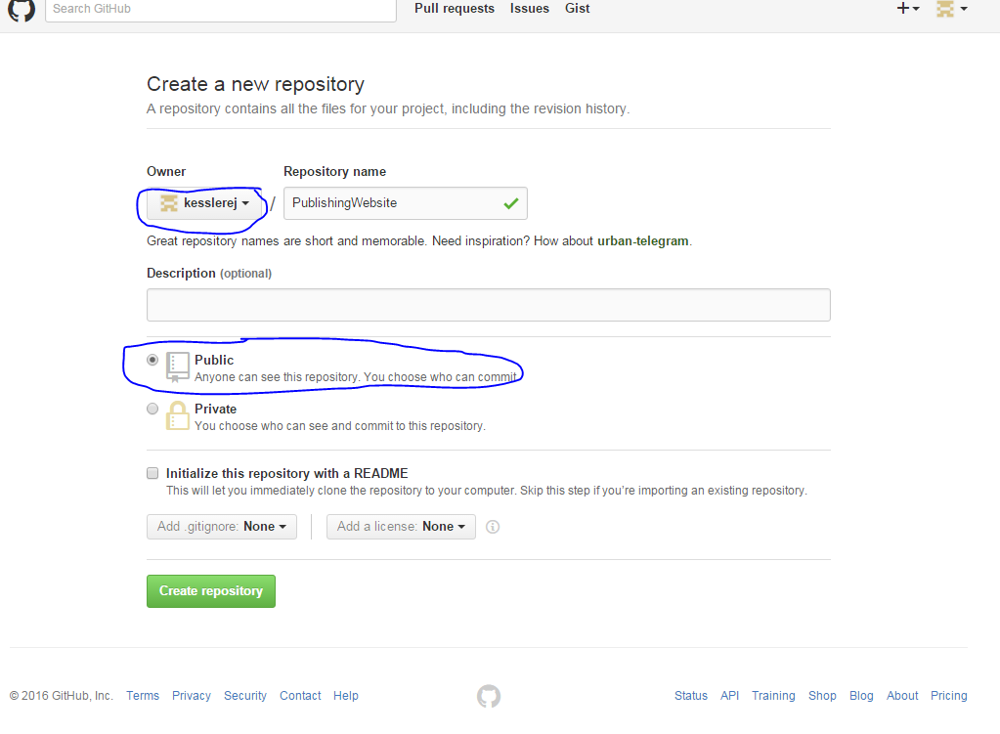

How to publish a website via GitHub
This website will give you step by step intructions on how to upload your coded website onto the Internet using GitHub (Make sure you have already downloaded GitHub).
- Open up the folder with the code you want to put on the internet.
- Right click anywhere in the folder and click GitBash
- Type in, git init and hit enter
- Type in, git checkout -b gh-pages and hit enter
- Type in, git status.

- Type in, git add . (include the period!)
- Type in, git commit -m "Your message here"
- Type in, git status
For now you are done in GitBash, but don't close it!
- Go to https://www.github.com and log in or create an account.
- After you log in add a new repository by clicking the plus sign in the top right and hitting, "New Repository"
- Make sure that Public is selected, your account is the owner, and name the repository whatever you would like.

- After you have created the repository, underneath ...or push an existing repository from the command line and copy the first line of code into the GitBash and hit enter.
- Next copy the second line of code but change "master" to gh-pages
- After you insert the second line it will ask you for your username and password you used for GitHub, insert it and hit enter.(your password will not show up)
- to look at your published website type in your username.github.io/RepositoryName